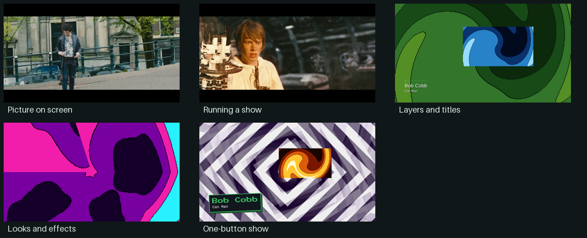

DECKBOY / EXAMPLE SHOWS
Five shows, one step at a time.
Start with a picture on a screen.
Open the first show
In Deckboy, EXAMPLE SHOWS on the startup screen opens
01-picture-on-screen.deckboy for you. Or extract this folder,
keep the media folder beside the shows, and choose
OPEN.
Deckboy saves your changes as you go. To keep the original, choose
SAVE AS (Ctrl + Shift + S) first.
New to Deckboy? LEARN THE BASICS on the startup
screen is a five-minute guided tour of the same first steps.
STEP 1 / TURN THE OUTPUT ON
MENU → Video Outputs → OUTPUT OFF
Click it so it reads OUTPUT ON. The output window opens,
black until you take a cue. In DASH (Ctrl + D),
1 Output on does the same.
For a projector or second screen, choose it on the same page first.
STEP 2 / PUT A PICTURE ON IT
Click cue 01, then press Enter
TAKE sends the selected cue to the output. It now reads
YOUR OUTPUT IS LIVE.
STEP 3 / THE NEXT CUE
Press Page Down
The next cue goes live: a clip, then a picture Deckboy draws itself.
The last cue shows you BLACK (B), which clears
the screen at any time.
Then work up
- 02 — Running a show: a running order with a crossfade, a clip
that goes to black at its end, one that loops and one that fades out by itself.
- 03 — Layers and titles: three playlists in one picture: backdrop,
inset and a name strap. Choose the named scenes in DASH.
- 04 — Looks and effects: one picture, six looks, with oscillators
you can switch off to compare.
- 05 — One-button show: everything above, run from one DASH button
with original music.
Every cue has a short note in the inspector. The full guide is in
README.md.

Footage: Tears of Steel,
(CC) Blender Foundation | mango.blender.org, licensed
CC BY 3.0.